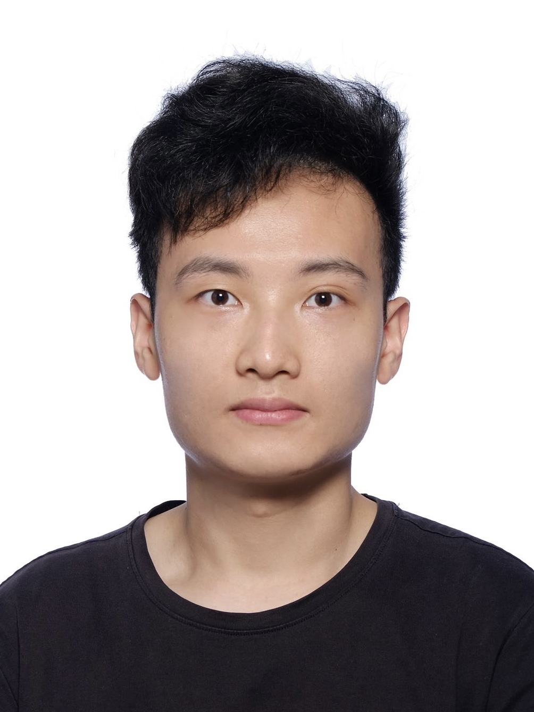

|  | Su ZHENG (鄭溯)Ph.D. Student
Department of Computer Science and Engineering |
Biography
I am a first-year Ph.D. Student at the Department of Computer Science and Engineering, the Chinese University of Hong Kong (CUHK),
under the supervision of Prof. Bei YU and Prof. Martin D.F. Wong since Fall 2022. Prior to that, I obtained my B.Eng. and M.S. degree from Fudan University under the supervision of Prof. Lingli Wang in 2015-2022.
My research interest is to solve critical problems in electronic design automation (EDA) with advanced artificial intelligence (AI) methods. Besides research, I love playing the piano and listening to classical music in my spare time.
Recent News
Feb/2023: Congratulation! Our work on deep-learning-assisted global placement has been accepted by DAC 2023!
Aug/2022: Congratulation! Our approximate multiplier design has been published in TVLSI!
Nov/2021: Congratulation! Our CGRA platform FastCGRA has been published in FPT 2021!
Research Interest
AI in Electronic Design Automation
Optical Proximity Correction
VLSI Placement
Design Space Exploration
Coarse Grained Reconfigurable Arrays
Approximate Computing
Publication
[C6] S. Zheng, L. Zou, S. Liu, Y. Lin, B. Yu, M. D.F. Wong, “Mitigating Distribution Shift for Congestion Optimization in Global Placement”, Design Automation Conference (DAC), 2023
[C5] S. Zheng, J. Qian, H. Zhou, L. Wang, “GRAEBO: FPGA General Routing Architecture Exploration via Bayesian Optimization,” The International Conference on Field-Programmable Logic and Applications (FPL), 2022.
[C4] Z. Li, S. Zheng, J. Zhang, Y. Lu, J. Gao, J. Tao, L. Wang, “Adaptable Approximate Multiplier Design Based on Input Distribution and Polarity,” in IEEE Transactions on Very Large Scale Integration (VLSI) Systems, vol. 30, no. 12, pp. 1813-1826, Dec. 2022.
[C3] S. Zheng, Z. Li, Y. Lu, J. Gao, J. Zhang and L. Wang, “HEAM: High-Efficiency Approximate Multiplier optimization for Deep Neural Networks,” 2022 IEEE International Symposium on Circuits and Systems (ISCAS), 2022. (code)
[C2] S. Zheng, K. Zhang, Y. Tian, W. Yin, L. Wang and X. Zhou, “FastCGRA: A Modeling, Evaluation, and Exploration Platform for Large-Scale Coarse-Grained Reconfigurable Arrays,” 2021 International Conference on Field-Programmable Technology (ICFPT), 2021.
[C1] S. Zheng, J. Chen and L. Wang, “Targeted Black-Box Adversarial Attack Method for Image Classification Models,” 2019 International Joint Conference on Neural Networks (IJCNN), 2019. (code)
Education
Ph.D., Department of Computer Science and Engineering, The Chinese University of Hong Kong (CUHK), Aug/2022 - Now
M.S., State Key Laboratory of ASIC & System, Fudan University (FDU), Sep/2019 - Jun/2022
B.Eng. (Elite Engineering Honor Degree, Rank 1st), School of Microelectronics, Fudan University (FDU), Sep/2015 - Jun/2019
Projects
Black-box-attack, a targeted black-box adversarial attack method for image classification models, https:github.comshelljanetargeted-black-box-attack
FastCGRA, a platform for large-scale CGRA, 40k lines of C+ code, will be open-source soon
SimpleCGRA, a simple and efficient CGRA platform, implemented with Python and LLVM, https:github.comseraphjaneSimpleCGRA
ApproxFlow, an approximate multiplier design and evaluation platform for deep learning, 10k lines of C+ code, https:github.comshelljaneApproxFlow
Selected Awards
| Full Postgraduate Studentship, | The Chinese University of Hong Kong, | 2022-2026 |
| First Class Scholarship, | Fudan University, | 2015-2018 |
Skills
Languages: C/C++, Python, Verilog, Perl, Haskell, Matlab, R, Java
Tools : PyTorch, Tensorflow, Caffe, Vivado, LaTeX
Hobbies : Piano, Classical Music